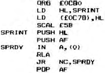

Nascom Newsletter |
Volume 2 · Number 6 · January 1983 |
| Page 6 of 41 |
|---|
strangest omission is the macro that we all know and love. It is not possible to define a macro in memory and invoke it by name elsewhere let alone use dummy arguments. If Mr. Watson is reading this in Bedford I would buy an update or extension doing this.
ORG/PHASE allows code to be generated to run at PHASE but loaded at ORG for PROM blowing. Nice touch.
PRS – all RST’s are handled by name but PRS drops the 00 byte an for you – the manual doesn’t say that though.
One last idiosyncracy – mnemonics which load a two byte value into a one byte register cause a fatal error. Most assemblers I know pull the first byte and warn only.
In summary I would say a very good assembler but it was a wrench loosing the line numbers and display of errors while editing, as in ZEAP.
With any system the most disappointing things are not its limitations but the errors in the manual. The errors here are few and fairly minor but frustrating till you know them.
Thanks to BAL Kenilworth (nice guys) for being patient and helpful while I got used to NAS-ASS.
Now something else that came to light via the same stable is that the Nascom 3 CPU board has a link from test point 3 to pin * on the serial port connector and you won’t find that in the manual. This is for the printer busy signals to run in the same cable as the serial data. To make it work for RS2S2 (instead of TTL handshaking) you need a 1K2 resistor and two 1N4148 diodes at the D connector.
TX only shown
D Connector pin no.s
Serial port connector pin no.s
Of course, its no use unless the software handles it but this routine does – provided you have executed 0C80H and U is invoked to turn it on. (N turns it off).

| Page 6 of 41 |
|---|